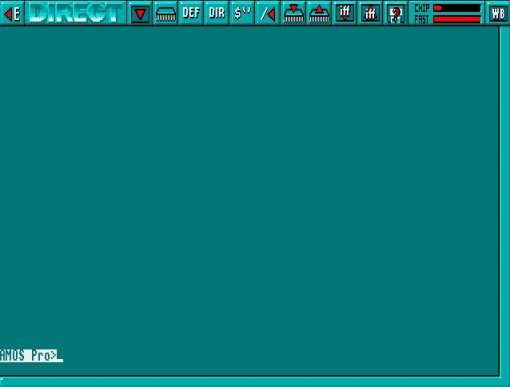

The [<E] button at the top-left of the screen is
used to return to Edit Mode. This is also achieved by pressing the [Esc] key.
The [<E] button at the top-left of the screen is
used to return to Edit Mode. This is also achieved by pressing the [Esc] key.The Direct Mode working screen will appear, looking like this:
The Direct Mode screen has a bar of useful icons above a large window area where commands are entered and their results displayed.
The [<E] button at the top-left of the screen is
used to return to Edit Mode. This is also achieved by pressing the [Esc] key.
 The [WB] button at the top-right of the screen is used to go to the Workbench. If AMOS
Professional has been loaded from the Workbench, it will remain in memory, and you
can return to AMOS Professional by pressing [Amiga]+[A]. The [WB] button will have
no effect if the CLOSE WORKBENCH command has been called from one of your programs,
as explained in Chapter 13.1.
The [WB] button at the top-right of the screen is used to go to the Workbench. If AMOS
Professional has been loaded from the Workbench, it will remain in memory, and you
can return to AMOS Professional by pressing [Amiga]+[A]. The [WB] button will have
no effect if the CLOSE WORKBENCH command has been called from one of your programs,
as explained in Chapter 13.1.
To the right of the "DIRECT" identification panel is the [OUTPUT] icon. This is used to toggle the display of all operations between the Direct Mode window and your program screen. If selected, operations will be performed in the Direct Mode window, and the program display will remain untouched. To return to normal, simply select the [OUTPUT] button again. Please note that only text output is permitted within this window.
The row of ten icons between the [OUTPUT] and [WB] icons are the equivalent of pressing one of the Direct Mode function key pre-sets [Fl] to [F10]. Selecting one of these icons with the left mouse button is the same as pressing the equivalent function key. Selecting a button with the right mouse button is the equivalent of pressing [Shift]+[Function key].